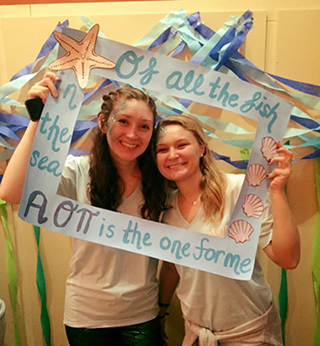

Alpha Omicron Pi
Founded: January 2, 1897 at Barnard College
Philanthropy: Arthritis Research and Education
Mission Satement: "Women Enriched through Lifelong Friendship," "Exceed the Expectation"
Motto: Simplicity and Beauty
Colors: Cardinal
Symbol: Sheaf
Mascot: Panda
SJU Events: Sisters for Soilders
